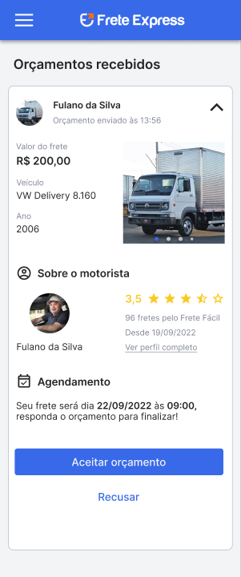

01 · Visão geral
Transporte é uma necessidade.
A conexão é a oportunidade.
O Frete Express é um projeto de plataforma digital desenvolvido para conectar pessoas e empresas que precisam transportar algo a motoristas e transportadores. A proposta é reunir a solicitação, as propostas dos profissionais, a contratação e o acompanhamento do serviço em uma mesma experiência.
Para o cliente, a jornada começa na definição do que precisa ser levado e de qual será o trajeto. Para o profissional, a plataforma cria um ambiente em que pode conhecer pedidos e apresentar suas condições. A administração acompanha o conjunto por meio do painel que integra o projeto.
A proposta comercial é a venda integral do projeto. O comprador assume a tecnologia e pode desenvolver seu posicionamento, sua marca e sua estratégia de lançamento.
02 · Como funciona
Da solicitação à entrega,
uma jornada conectada.
O cliente define a necessidade.
O cliente informa o que precisa transportar, escolhe o tipo de serviço e define os pontos do trajeto. A revisão do pedido reúne os dados que serão considerados na elaboração dos orçamentos.
Os profissionais apresentam propostas.
Com os orçamentos recebidos, o cliente pode analisar o valor, o veículo e as informações do transportador. A escolha do profissional acontece a partir dessas informações, permitindo comparar as condições para aquele serviço.
A contratação segue pelo aplicativo.
Após escolher o orçamento, o cliente realiza o pagamento pelo aplicativo. O design do projeto inclui uma tela de pagamento por Pix. Chat e acompanhamento em tempo real fazem parte da experiência apresentada para o transporte.
A entrega completa a experiência.
A confirmação de entrega faz parte do fluxo de liberação do pagamento. Ao final do serviço, a avaliação permite registrar a experiência com o profissional.

A informação acompanha a decisão.
Esta tela do design reúne proposta, veículo e perfil do profissional. As informações exibidas são dados ilustrativos do projeto no Figma.
03 · Diferenciais
Uma plataforma que abre
mais de um caminho.
Personalização da identidade.
A identidade visual pode ser adaptada para uma empresa, um projeto regional ou até um time de futebol. Essa possibilidade permite trabalhar uma marca próxima do público que se pretende alcançar e desenvolver uma apresentação própria para o negócio.
Regionalização.
O projeto contempla a estruturação da comercialização do produto por território. A regionalização abre espaço para desenvolver parcerias locais e pensar a atuação de acordo com o contexto de cada região. O modelo comercial e as condições de cada território precisam ser definidos pelo responsável pelo negócio.
Carros com reboque.
A plataforma também contempla carros com reboque. A proposta permite que motoristas que já trabalham com aplicativos considerem outra modalidade de transporte, aproveitando possibilidades de atendimento com esse tipo de veículo.
Frete de retorno.
Depois de realizar uma entrega, o profissional pode aproveitar a viagem de volta para levar outra carga. O frete de retorno amplia o uso do trajeto e pode permitir uma proposta mais competitiva para o cliente.
Frete pelo caminho.
Uma viagem também pode gerar oportunidades ao longo do percurso. Em um deslocamento de Pelotas a Porto Alegre, por exemplo, o profissional pode atender uma coleta ou entrega em Camaquã. Esse é um exemplo de uso para mostrar a lógica do recurso.
04 · O projeto completo
Tecnologia e experiência
fazem parte da mesma entrega.
O pacote apresentado para aquisição reúne os componentes que formam o projeto Frete Express:
- Aplicativos Android e iOS: o projeto dos aplicativos para a experiência de clientes e profissionais.
- Servidor e backend: a estrutura de servidor e a lógica de suporte à plataforma.
- Painel administrativo: o ambiente de administração que compõe o conjunto de gestão.
- Landing page: o site de apresentação incluído no pacote original do projeto.
- Design no Figma: as telas e os fluxos que orientam a experiência e sua evolução.
O escopo exato da entrega, o acesso aos materiais e as condições de transferência são alinhados na negociação entre comprador e vendedor.
05 · Possibilidades
Uma base para construir
a sua estratégia.
O projeto pode interessar a empreendedores que pretendem desenvolver um negócio no transporte, a empresas de logística ou transportadoras que buscam uma base digital e a investidores que desejam avaliar a aquisição de uma tecnologia para esse mercado.
A personalização e a regionalização permitem pensar o posicionamento de acordo com uma marca e um território. Já as modalidades de reboque, retorno e frete pelo caminho ampliam os cenários de uso que podem fazer parte da proposta comercial.
Cada comprador define como transformar essas possibilidades em uma operação: público, região de atuação, parcerias, atendimento, estratégia comercial e preparação do lançamento.
06 · Estágio do projeto
A tecnologia tem uma história.
O lançamento é o próximo capítulo.
O Frete Express está em pré-lançamento. A aquisição envolve assumir o projeto, realizar as atualizações necessárias e preparar o lançamento com a estratégia do comprador.
Na conversa comercial, o interessado pode conhecer os materiais do projeto e alinhar as informações sobre o estado atual, as entregas e os próximos passos. Esse entendimento ajuda a planejar o trabalho de continuidade e a implantação.
As telas exibidas neste site são imagens do design original no Figma e contêm dados de exemplo. Os cenários de marca, região e percurso são representações ilustrativas das possibilidades apresentadas.
07 · Aquisição
Conheça os detalhes.
Converse sobre o próximo passo.
A proposta é a aquisição integral do Frete Express. O valor e as condições são tratados diretamente com o responsável pela venda, considerando o escopo da entrega e a transferência do projeto.
O primeiro passo é conversar sobre o seu interesse, conhecer os materiais disponíveis e alinhar os detalhes da aquisição. A partir dessa conversa, comprador e vendedor podem definir os próximos passos.
Ver canais de contato